Re-Routing Devotion
Managing holy waste on the Varanasi ghats
DURATION
1 semester (~4 months)
CONTEXT
Varanasi ghats · Published, RSD15
MY ROLE
Co-author, full process
RESEARCH METHOD
Desk research + systems mapping
CORE DESIGN CHALLENGE
How might we make letting go of a sacred offering feel like part of the ritual, and end the loaded climb sanitation workers make up the ghat steps?
RE-ROUTING DEVOTION
A city that is not failing to be clean. It is succeeding at being holy.
Crores visitors in 2024
Tons floral waste a day
Waste collectors with back pain
11
10
72

NOW MULTIPLY YOU BY EVERYONE ON THE GHATS
10 tonnes a day
≈ one city bus
That’s the flowers alone. Picture a full-size city bus, packed with garlands, leaves and petals, left on the steps and in the river every single day.
On festival days it spikes. On Maha Shivratri 2025, 6.67 lakh devotees reached Kashi Vishwanath in a single day, enough to fill India’s largest cricket stadium five times over.
ONE DAY ON THE GHATS
One bus-load of flowers.
≈ 10 tonnes.
Over a year, that’s 365 buses. Parked nose to tail, they’d stretch about 4.4 km.
Sources: Varanasi Nagar Nigam via Atal (2022); ANI (2025). A city bus weighs roughly 10 t empty and is about 12 m long; stadium = Narendra Modi Stadium, about 1.3 lakh seats.
Nobody here is careless. The devotee’s story ends at the river. The waste’s story starts there, and nobody is watching it.
1 The ritual stayed the same, the material didn’t. Varanasi still offers flowers and diyas to the Ganga, but clay, leaf and cotton have quietly become plastic, thermocol and chemical dye.
2 Design with faith, not against it. Most civic projects here apply a Western municipal model that doesn’t fit how the city sees purity and the sacred. We mapped one offering’s full journey, from a devotee’s hand to where it ends up.
The study
A desk-based systems study. It draws on published waste characterisations, river water-quality and microplastic surveys, occupational-health literature, and official municipal, flood and tourism figures.
What we did not do
No interviews, site surveys or waste weighings. Every number on this page is reported as measured, derived or estimated, and our proposal is a set of design intentions, not proven benefits.
Outcome
A published paper at RSD15, Shades of Systemic Design (Turin, 2026), co-authored with Bhargav Ram Chodabattula, Yash Maherwal and Prof. Vivek Kant, IIT Kanpur.
02
THE SYSTEM
Who touches an offering before the river does?
Before drawing anything we needed to see everyone with a stake in a ghat. We used the ghat itself as the stakeholder framework: who stands on the steps, who serves them from the city above, and who sets the rules from further away. Actor maps then showed where the friction sits, between temple management, vendors, sweepers and visitors.
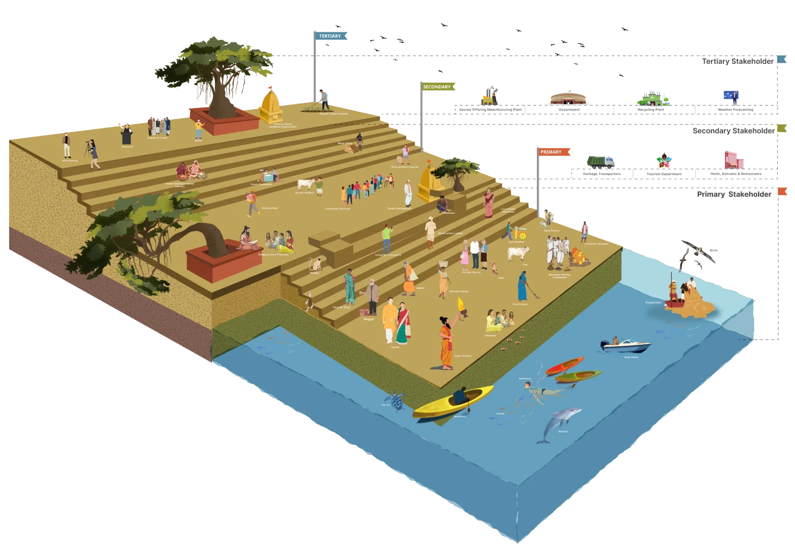
Stakeholder mapping. The ghat as a stakeholder framework, in three layers: primary, secondary and tertiary.
Primary · on the steps
Devotees and tourists, pujaris, flower and food vendors, ghat cleaners, boatmen and fishermen, cremation handlers and mourning families, temple management, and the river’s own life: fish, turtles, dolphins and birds.
Secondary · serving the ghat
Garbage transporters, the tourism department, hotels, ashrams and restaurants, travel companies, dairy and wood suppliers: the people whose work feeds waste onto the steps or carries it away.
Tertiary · setting the rules
Government bodies, recycling plants, sacred-offering manufacturers and weather forecasting. They are distant from the steps, but they decide what is allowed, what gets made and when the river rises.
Then we mapped time. A 24-hour cycle of waste through the shrines, and a yearly one, to see when the system gets swamped. Festivals squeeze the year into a few days: 6.67 lakh devotees at Kashi Vishwanath on Maha Shivratri 2025, 70 to 80 lakh across Shravan, and per-capita waste roughly doubles on a festival day.
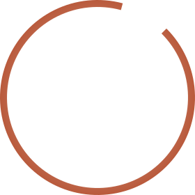
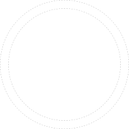
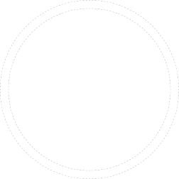
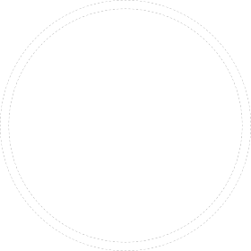
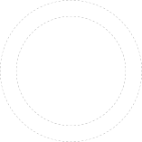
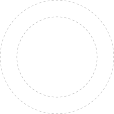


<1k Kg
<1k Kg
<3k Kg
<5k Kg
<5k Kg
<3k Kg
I
N
C
O
M
I
N
G
W
A
S
T
E
O
U
T
G
O
I
N
G
W
A
S
T
E
RIVER OF LIGHTS
19:30 - 22:00
River surface clogs with wax,
leaves and strings.
Overwhelmed localized waste
bins spills into the streets &
steps.
NIGHT CLEANING
22:00 - 1:00
Aggregation mixed from entire
day.
Labor fatigue; poor segregation
practice as workers rush to
clean.
BASELINE WASTE
1:00 - 3:00
Continuous generation on
cremation waste.
Managing specialized
cremation waste alongside
municipal trash.
DAWN PREP
3:00 - 4:30
Residual overnight debris
cleared.
Low lighting; Low workforce
available for heavy lifting.
GANGES AARTI
17:00 - 19:30
Ambient crowd waste & Diyas.
Waste collection impossible in
this window.
AARTI PREP
15:00 - 17:00
Accumulation on vendor
packing.
Temptation to sweep residual
waste directly into the river.
DIETIES REST
12:00 - 15:00
Floral Waste begins rapid decay
in Monday heat.
Authorities cannot move the
morning backlog because of
problem.
First Mile
TOURIST BOAT
PEAK
9:00 - 12:00
Transition to ambient river
waste.
Temple trusts and NGOs
dispute custody over the
accumulated pile.
SHRINE AT
CAPACITY
6:00 - 9:00
Massive influx of heavy mixed
waste.
Handcarts trapped in
pedestrian gridlock in the way.
MORNING AARTI
4:30 - 6:00
Influx of fresh Marigold/
Offerings
Initial mixing of wet floral waste
with dry plastics begin.
The Ghat's
Daily Cycle
The ghat’s daily cycle: from dawn prep and morning aarti to night cleaning, with the windows when collection is impossible.
Transitional Mids
Seasonal Peak
Non-seasonal Low
How Holy Waste Changes Through the Year -
Low, Mid and Peak
Maha Shivratri
1.5 million+ devotees for
night vigils, processions from
Maha Mrityunjaya to Kashi
Vishwanath temple, and
Rudrabhishek rituals, highest
winter footfall at Shiva
temples. Dhrupad Mela at
Tulsi/Assi Ghat offers music.
Akshaya Tritiya
Draws wealth-seekers for
Ganges dips and Gold buys,
Celebrates river descent with
Lamps of ghats.
Holi
Involve colors, bonfires at
temples; moderate spring
crowds.
Makar Sankranti
Features Kite-flying, sweets
and river baths at ghats;
moderate crowds of locals
and pilgrims. New Year draws
families to Dashwamedha
Ghat fireworks.
Shravan Month
Peaks with Kanwar Yatra
Mondays, millions of Shiva
devotees carry Ganges water
home, massive footfall at
ghats and Kashi Vishwanath
despite rains.
Hot Summers
Limits visitors Panch Koshi
Parikarama starts from
Manikarnika ghat for
women’s purification walks.
Over 1500+ couples get
married under Chief Minister
mass marriage scheme.
Peak Season Explodes
Ganges Mahotsav,
Dhanteras, Diwali, Ram Leela,
etc.
Lights Diyas along 84 ghats,
drawing God’s mythical visits
per lore. Extreme crowds of
pilgrims and tourists.
Low Monsoon
Crowds ease Ram Leela
begins Pre-Dussehra with
dramas at temples,
Nakkatayya parades re-
enacts Ramayana scenes
in streets.
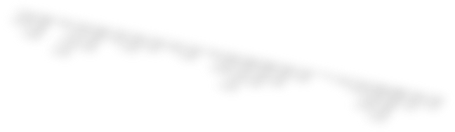


January
February
March
April
May
June
July
August
September
October
November
December
How holy waste changes through the year: non-seasonal lows, transitional mids and festival peaks.
6.67 lakh
Devotees at Kashi Vishwanath on Maha Shivratri 2025
70–80 lakh
Devotees across the month of Shravan
2×
Per-capita waste on a festival day
The system is built for an average day, and it breaks on a peak one.
03
THE PROBLEM
It breaks first at the first mile.
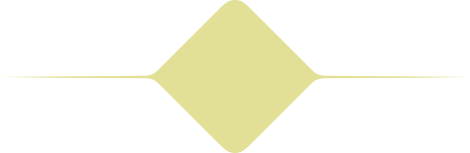
Cascading Impact
Logistical Failures
The Transit Blockade: Ancient, narrow temple
alleyways completely prevent access for standard
municipal garbage trucks.
The Step Penalty: Waste generated on the lower
riverfront steps must be manually hauled up steep
inclines by workers.
The Density Squeeze: High urban congestion
clusters exactly where the waste is generated,
leaving no physical space for temporary storage or
sorting.
The Ash Dominance: Crematorium wood ash
accounts for nearly 78.5% of the total physical mass
entering the river from the ghats.
The Floral Load: The city generates 10 to 18 tonnes
of highly perishable floral offerings every single day.
The Plastic Paradox: Over 26% of the traditional
"holy waste" left on the ghats actually consists of
synthetic plastics, camphor wrappers, and
polythene.
Ecological Toxicity: Unprocessed floral sludge,
plastics, and chemical dyes are dumped directly,
suffocating the Ganges ecosystem.
Economic Vulnerability: Exposed, rotting waste
threatens the daily livelihoods of thousands of local
vendors and boatmen who rely on the riverfront.
Reputational Damage: The visible pollution degrades
the spiritual experience for pilgrims and damages
Varanasi’s global standing as a sacred heritage
destination.
Manual Reliance: Because trucks cannot enter, the
entire first-mile transit relies entirely on slow,
physical human labor and handcarts.
The Rot Window: The slow speed of handcarts
combined with extreme Indian heat causes milk-
soaked flowers to rot anaerobically in the streets
long before reaching processing centers.
The Infrastructure Breaking Point: Legacy sanitation
systems are fundamentally unequipped to scale up
and handle multi-ton festival spikes.
Spatial Chokepoints
Material Reality
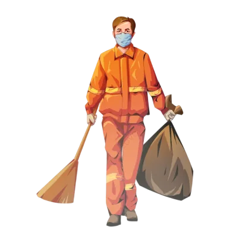
First Mile Analysis
First mile analysis: spatial chokepoints, material reality, logistical failures and cascading impact.
Handcarts can’t climb stone steps, and nothing permanent survives at the water’s edge. The danger level here is 71.262 m, and ghats including Manikarnika go under most monsoons.
So workers haul wet, decaying loads up by hand. Among Indian solid waste collectors, the twelve-month prevalence of low-back pain is 0.72.
Devotees are stuck too. Putting a sacred offering in a municipal bin feels like a betrayal, so the river gets it.
The useful surprise: count, not weight.
We catalogued the offerings themselves on a frequency-versus-impact matrix. Flowers take the most room, but one in four catalogued components is synthetic: nylon garland thread, camphor wrappers, foil vark, plaster-of-Paris diyas. By mass it is lower, 8–16% at comparable sites and 9.7% in Varanasi’s municipal stream. Contamination by item count, not weight, is what makes hand-sorting slow and expensive.
Mapping Holy Waste - Frequency vs Impact
High Impact
Low Frequency
High Frequency
Low Impact
Plastic Pouch
Cooked Prasad/Food
Milk Products
Batasha/Sweets
Human Remains
Garland Threads
Moli/Kalava
Broken Decor/Thermocol
Ornaments & Shringar
Mata ki Chunari
Surface Coatings/Paints
Idols & Photos
Safety Pins/Nails
Vark
Offering Coins
Printed Holy Books
Matchboxes
Steel Utensils
Sindoor/Kumkum
Abir/Gulal
Kapoor
Ash
Bhasma/Vibhuti
POP Diya
Synthetic Clothes
Ghee
Incense Sticks
Dhoop Cones
Wood
Flowers
Rice/Seeds
Fruits
Cow Dung Cakes
Guggul/Loban
Sandalwood Logs
Rudraksha Mala
Turmeric
Mango Leaves
Leaf Bowl
Beel Patra
Neem
Tulsi/Kusha
Coconut Shells
Bamboo (Biers)
Janeu
Mustard Oil
Cotton Shroud
Mapping holy waste: frequency vs. impact of each offering component.
1 in 4
Catalogued offering components that are synthetic
9.7%
Synthetic share by mass in Varanasi’s municipal stream
17–36
Microplastic particles per litre, worst of three Ganga sites sampled
To understand the true scale of the crisis
in Varanasi, you just have to look at the
daily numbers. Every single day, anywhere
from 10 to 18 tonnes of flowers are offered
across the city's major temples simply due
to the massive crowds.
But the real bottleneck happens down
by the water. If you isolate just nine of
the main riverfront ghats, you are
looking at nearly 2,000 kilograms of
temple waste piling up on the steps
daily.
There is also a major misconception
that all of this "holy waste" is purely
organic. In reality, more than a quarter
of it about 26 percent is just plastic.
Devotees naturally mix camphor
wrappers, polythene bags, and even
synthetic fake flowers right in with their
traditional offerings.
However, the silent giant in all of this is
the cremation ash. When you factor in
the burning ghats, wood ash actually
makes up nearly 78% of the physical
mass washing into the Ganges from the
steps, completely dwarfing the flowers
and plastics.
Zooming out beyond the riverfront, the
municipal system is already at its
breaking point. The city is trying to
process roughly 600 tonnes of general
trash every day. Almost half of that is
heavy, wet organic matter, which rots
incredibly fast inside those tight,
crowded alleyways long before the
garbage trucks can even reach it.
Scale of
Waste
Contamination
Composition
Organic Waste
47%
Plastics
27%
Paper
16%
Cloth
6%
Glass
4%
And it reaches the water. We traced what happens if loading continues: a cascade from the steps to the river’s ecology, livelihoods and the pilgrim experience. This is a projected risk, not something we observed: this stretch is still well oxygenated at 7.2–7.7 mg/l.
Cascade of
Consequences
Toxic dyes bleed from
synthetic materials;
immediate water pH
spikes.
Accumulated organic
sludge turns anaerobic,
releasing methane gas.
Decomposed macro-
plastics break down and
embed deeply into the
riverbed.
Heavy metals from paints
and batteries breach the
local groundwater table.
Permanent toxic "dead
zones" form where
neither water nor soil can
recover naturally.
Environment
Stray dogs and cows
consume plastic
wrappers mixed with
food offerings.
Spike in fatal
gastrointestinal
blockages among local
street animals.
Noticeable drop in the
local river fish population
due to habitat stress.
Toxic bioaccumulation
begins concentrating in
the local aquatic food
chain.
Generational birth
defects and population
collapse in native aquatic
and avian wildlife.
Animal
Excess milk and sugar
waste acts as a sudden,
unnatural fertilizer in the
water.
Aggressive surface algae
blooms rapidly expand,
blocking sunlight.
Severe hypoxia (oxygen
depletion) occurs due to
algae decomposition.
Submerged native
underwater flora
suffocates and dies off
entirely.
Complete botanical
collapse of the local
aquatic ecosystem,
leaving barren waters.
Plant
Sanitation workers suffer
acute back strain;
bathers contract minor
skin infections.
Rise in worker
absenteeism due to
injury; localized
dysentery outbreaks.
Chronic spinal damage
becomes the norm for
workers; endemic
waterborne diseases rise.
Systemic worker
disability crisis; municipal
healthcare infrastructure
strained.
Measurable decline in
long-term health and life
expectancy for river-
adjacent communities.
Human
Visual blight and foul
odors immediately
disrupt the peaceful
atmosphere.
Increased pilgrim
complaints and negative
word-of-mouth.
Measurable drop in
repeat tourism, directly
hurting local vendors and
boatmen.
Severe global reputation
damage to Varanasi as a
pristine heritage
destination.
Tragic normalization of
extreme pollution; a
permanent loss of the
site's sacred identity.
Culture
This systems map illustrates the cascading breakdown
of Varanasi’s riverfront ecosystem. Rather than isolated
incidents, the degradation caused by "holy waste" is a
five-stage chronological chain reaction. Reading left to
right, the visualization tracks how immediate biological
and chemical triggers, such as rotting floral waste and
toxic synthetic dyes, progressively destroy the aquatic
environment and local wildlife.
SHORT TERM
MID TERM
LONG TERM
Cascade of consequences across trash, environment, animals, people and culture, from short term to long term.
We then used the temple and the submerged ghat as metaphors to get underneath the logistics: clay diyas swapped for foil pans, the guilt of holding waste with nowhere to put it, the belief that the river washes anything away. That is where habits and infrastructure collide, and where revenge effects sit.
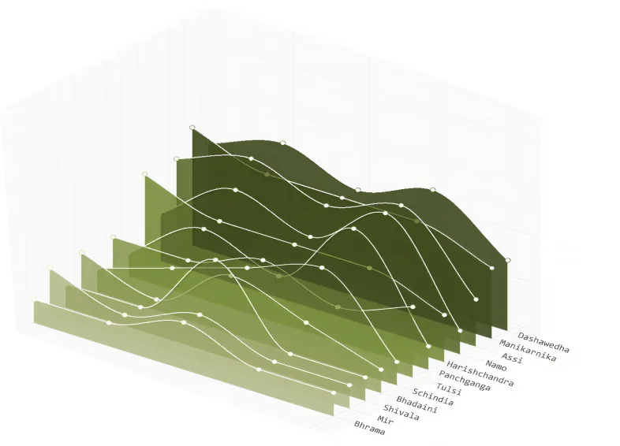
Material Volume
Occasion Intensity
Entry Pathway Severity
Actor Diversity
Environmental Risk
Exploring the 4 most highly severe Ghats -
Dashashwamedh Ghat
Massive, concentrated human footfal
It suffers from the highest concentration
of "Holy Waste", tonnes of milk-soaked
flowers, synthetic camphor wrappers,
clay diyas, and polythene bags dumped
within a tight 3-hour evening window.
The massive crowds completely
paralyze any municipal cleanup efforts
during peak hours.
Manikarnika Ghat
24/7 Cremation logistics
The sheer tonnage of physical mass. It
generates thousands of kilograms of
wood ash, unburnt wood, and discarded
synthetic shrouds (cloth mixed with
plastic) daily. The severity here is driven
by material weight and volume,
permanently altering the riverbed depth
and water toxicity with heavy metals
and carbon.
Assi Ghat
Heavy tourism and commercial overlap
The waste profile here is a complex
hybrid. You have traditional floral waste
from morning rituals aggressively mixed
with "modern" commercial waste, PET
bottles, single-use snack wrappers, and
food waste from the surrounding
hospitality ecosystem.
Namo Ghat
Newly redeveloped infrastructure drawing
massive VIP and domestic tourist crowds.
Unlike the ancient ghats, Namo’s
severity comes from recreational
dumping. The wide-open spaces attract
picnickers and casual tourists, resulting
in high volumes of commercial plastics,
packaging, and non-biodegradable litter
that quickly overwhelm its modern bins.
The visualization reveals a drastic spatial
asymmetry. The burden of pollution is not
evenly distributed along the Ganges. Instead,
it clusters into towering "hotspots." At
locations like Dashashwamedh and
Manikarnika, extreme human intensity directly
collides with severe architectural bottlenecks
(), causing every risk factor to peak
simultaneously. Meanwhile, adjacent, quieter
ghats barely register on the scale. The data
proves that high waste volume only becomes
a crisis when trapped by tight spatial
constraints and high actor diversity.
first mile
Ghat Analysis
Ghat analysis: comparing waste severity across the main riverfront ghats.
Layered Analysis
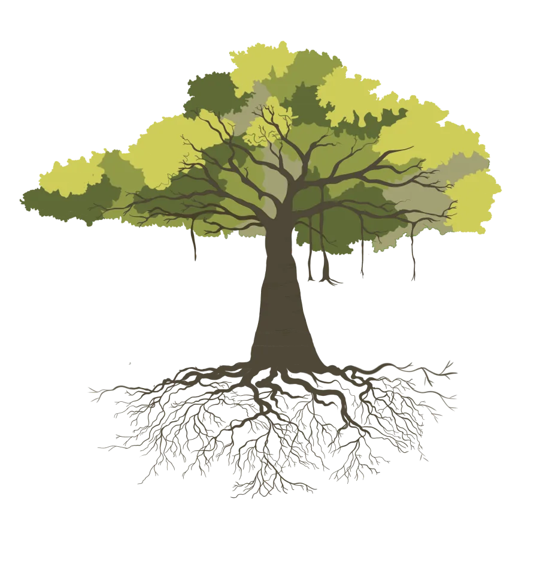
Event &
Trends
Structure &
System
Worldview &
Values
Deep Myths
Visual Distortion Of
Ghats
Abandoned Idols &
Status
Commercialised
Offerings
Clogged Drainage
System
Festival
Spikes
Toxic Asha
Cumulation
Piles Of Sacred
Waste
Stray Animal
Scavenging
Lack Of
Standardised Ritual
Kit
Lack Of
Categorised
Informal Waste
Sector
Marginalisation
Unregulated
Packaging Supply
Chains
Siloed Sanitation
Budget
Piles Of Sacred
Waste
Absence Of
Extended Producer
Responsibility
The Transient
Economy
Fragmented
Governance
Tradition Over
Environment
Pragmatism
Individual Ritual
Trumps Collective
Impact
Civic Apathy In
Transient Spaces
The Sacred /
Profane Divide
Purity Vs
Cleanliness
Social Stigma Of
Waste Handling
Devotion Over
Environmental
Pragmatism
Out Source
Responsibility The
Divine
The Invincible
Mother
The Cycle Of Merit
(Punya / Paap)
The Endless
Abundance Of
Nature
The River As A
Living Entity
The Geography Of
Liberation (Moksha)
Fire & Water Seen
As Divine
Layered analysis: from visible events down to the beliefs that hold them in place.
04
KEY DECISIONS
Choosing where to push.
A wicked problem has more leverage points than any team can act on. We laid out the candidate intervention points we found across the maps and scored each against cultural alignment, system impact, environmental impact, feasibility and risk. Three stood out: integrating a circular economy, a system for managing sacred offerings, and top-down, river-based waste logistics.
Possible Interventions points
A close-up zoom into the on-ground realities of the
ghats reveals critical pain points across the inefficiencies
in the waste flow, the intense manual labour involved
and the disruption to the sacred ritual experiences. This
friction in daily life highlights a huge gap between the
systems we have and the balance we want between
spirituality, ecology and user experience.
These insights are translated into targeted intervention
points through close examination of where and how the
system breaks down with the aim to not only resolve
immediate challenges but also to reimagine the system
in a more integrated, respectful and sustainable way.
Area of Focus
Circular Economy Integration
Intervention 1
Build a closed-loop system
that involves local
communities in the process
and ensures sustainable
livelihoods. It involves active
segregation of ‘Holy Waste’ to
improve the up-cycle of
organic materials.
Sacred Offering Managing
system
Intervention 2
Construct processes whereby
the value inherent in the
material is retained rather than
being turned into pollutants.
Build a closed-loop system
that involves local
communities in the process
and ensures sustainable
livelihoods.
Top-Down River-Based Waste
Logistics System
Intervention 3
Utilize the river as a natural,
traffic-less route for moving
waste around, this strategy
makes the process quicker
and less demanding, without
the need for carrying waste up
stairways and through
crowded alleyways.


Selection Metrix
CIRCULAR ECONOMY
INTEGRATION
RIVER-DRIVEN
LOGISTICS
BEHAVIOURAL
SYSTEM
COMMUNITY
INTEGRATION
CIRCULAR ECONOMY
INTEGRATION
CULTURAL
ALIGNMENT
SYSTEM IMPACT
ENVIRONMENTAL
IMPACT
FEASIBILITY
RISK
(LOW IS BETTER)


1
1
2
3
2
3
Stair-Compatible
Logistics
Toxin Reduction at
Source
River-to-Land
Collection
Network
High-Capacity
Collection
Alternatives
Policy Reform
Faith-Sensitive
Public Awareness
Tradition-
Compatible
Material Innovation
Leveraging
Religious
Influence
Foreign Tourist
Awareness
Voluntary to
Mandatory Shift
waste
Early Intervention
Over
Sedimentation
Packaging Supply
Chain Reform
E-Commerce
Accountability
Media & Social
Media as
Awareness Tools
Organised Animal
Feeding Network
Protected
Ecological Zones
Adaptive
Collection
Infrastructure
Possible intervention points and the selection matrix we used to choose between them.
DECISION 1
Build with belief, not against it
Disposal has to read as part of the rite, not a break from it. We leaned on the contagion and purity heuristics described by Rozin, Millman and Nemeroff (1986): what touches the sacred must only meet what is pure.
DECISION 2
Let gravity do the work
Instead of hauling loads up through the lanes, waste goes down the steps to shallow floating barges. The river becomes a traffic-free highway, and the narrow streets stay clear.
DECISION 3
Separate at the vessel
Since contamination by item count drives sorting cost, separation starts where the offering is given: wet floral matter is kept apart from dry synthetics.
DECISION 4
Design for the flood
The river rises several metres between seasons. Anything permanent has to sit above 73.9 m or be built to come apart.
Process Intervention
Clean
Down
Up
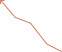
Bottom-Up Approach
Top-down Approach
Bottom-Up
Approach
Top-down
Approach
NEW
NEW
CURRENT
CURRENT
Workers simply push the sorted waste
down the steps. The waste is loaded
directly into shallow, floating river
barges waiting right at the water's
edge.
The river acts as an open, traffic-free
highway. It gets the trash to processing
centers much faster and drastically cuts
down the need for brutal manual labor.
Keeps the narrow streets completely
clear. The waste moves smoothly and
quietly behind the scenes, allowing the
devotee flow to remain completely
uninterrupted.
Workers have to haul heavy, wet
sludge up the steep stairs and then try
to navigate handcarts out of the city
through extremely narrow, crowded
alleys to reach garbage trucks.
Constantly delayed by city traffic and
bottlenecks in the alleys. It has a huge
physical cost, leading to rapid worker
burnout.
Garbage carts clash directly with the
flow of foot traffic. Devotees have to
constantly dodge leaking waste bins,
which ruins the peaceful, sacred vibe.
Risk Analysis & Mitigation
Revenge Effect
Infrastructure failure, such as
floods or maintenance problems,
could bring down the whole
system.
Mitigation Measures
Combination system (river +
limited land-based back-up)
Repairable systems
Seasonal adaptation plan
Revenge Effect
Shift towards automation/logistics
might affect current waste workers.
Mitigation Measures
Incorporating workers in new
positions such as sorting,
operations, and processing.
Pathways for skill transition
Maintaining livelihoods under
circular economy approach
Revenge Effect
Intervention with regards to rituals
concerning sacred offerings can be
viewed as an attack on culture.
Mitigation Measures
Joint design process with the help
of priests and other local
representatives
Communication about continuation
of rituals rather than elimination
Utilization of well-known symbolism
Clean Up Down, and the revenge effects we planned for, with their mitigations.
Flipping the direction of collection.
Today, workers drag wet sludge up the stairs. We flip it: sorted waste flows down to barges at the water’s edge.
Every change has a revenge effect, so each got a mitigation: co-design with priests, new sorting jobs for workers, and a river-plus-land backup for floods.
05
THE SOLUTION
Following one offering through five stages.
01
Ritual act
The offering is given at the Ganga Kund, a post-ritual deposit station.
02
Collection
Waste moves down the steps under gravity into floating barges.
03
Separation
Wet flowers are kept apart from dry synthetics at the vessel itself.
04
Transformation
An upstream facility turns flowers and fruit into incense, compost, dyes and fibre packaging.
05
Return
Products are sold back through the same ghat-side shops the offering came from.
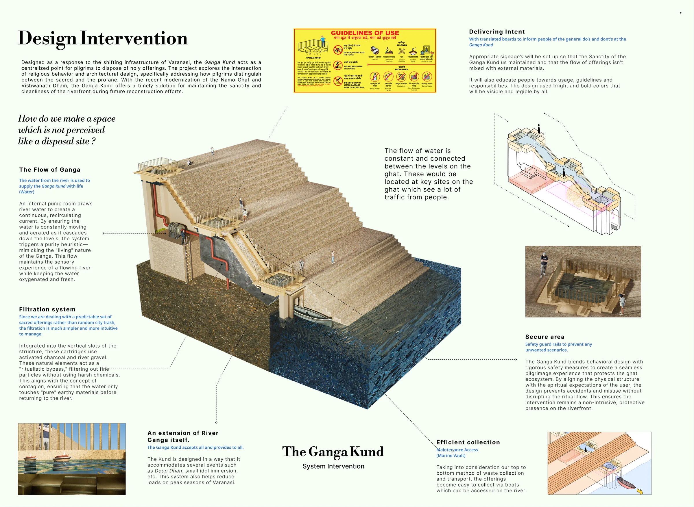
The Ganga Kund: system intervention. A deposit station that uses the flow of water, colour and signage so that letting go reads as part of the rite.
The flow of Ganga
An internal pump draws river water into a continuous, recirculating current that cascades down the levels, keeping the experience of a living, flowing river.
Filtration
Cartridges of activated charcoal and river gravel filter out fine particles without harsh chemicals, so the water only touches “pure”, earthy materials.
Delivering intent
Bright, bilingual guidelines of use explain what can and cannot go in, so offerings are not mixed with outside materials.
Efficient collection
A marine vault gives maintenance access from the river, so the collected offerings leave by boat, not by stairs.
Closing the loop.
Flowers and fruit in good condition are already a working feedstock: enterprises in Uttar Pradesh process 2.4 to 3 tonnes of temple floral waste a day. In our loop, fibre-based packaging made upstream goes back to the shops by the ghats, wrapping the next devotee’s offering.
Circular Economy
Framework Intervention


This circular economy model intercepts traditional
religious offerings at specialized Ganges Kunds,
preventing direct river pollution. Collected by boat
and transported upstream, the organic waste is
separated and upcycled into valuable resources:
flowers become incense and compost, coconuts yield
activated carbon, and fabrics are transformed into
biodegradable packaging. Finally, these eco-friendly,
culturally appropriate products are returned to the
local ghat shops to be sold as future offerings,
creating a fully closed-loop system that honors
religious rituals while systematically protecting the
environment.
The manufactured products the recycled paper wrapping for the
pooja offerings, the biodegradable bags, the incense sticks, and the
organic fertilizer come right back to those same shops from which
the cycle originated, wrapping around the offerings of the next pious
visitor within material derived from their previous visit. With this
system on an upward trajectory, the goal may soon be achieved of
replacing the current wave of plastic-infused pooja offerings
wrapping with one made by hand right here in Varanasi culturally
sustainable, eco-friendly, and religiously unquestionable.
Return of the Loop to the Shops
In the processing facility, everything is separated and turned into
something new. For example, flowers are used to produce natural
dyes, agarbatti, and vermicompost. The shells of coconuts are used
to produce activated carbon and fiber. Leaf plates and fabric are
processed to produce recycled paper and biodegradable packaging.
Devotion is dematerialized and turned into a resource here, bridging
the gap between ritual and ecology.
The Waste Is Turned into a Resource
The worshippers buy offerings like flowers, diyas, coconuts, and
prasad in recycled fiber wrapping from stores along the ghats,
transport these offerings to the Ganges Kund for immersion into the
river. The Ganges Kund is a specially designed facility that collects
the offerings before dissolving them to pollute the river flow. The
offerings are then loaded on wooden boats by workers in the early
morning when it is the only possible means of transportation within
the narrow alleys of Varanasi. The offerings are taken to the
processing facility upstream, where their second life begins.
The Offering Is Introduced Into the System
Ganges Kund
Kashi Vishwanath
temple (accumulates
offering in bulk)
Truck: Bulk collection and
transport
River route:
Overflow and downstream flow
Finished goods: Fiber-
based packaging back
to shops
Recycling and
manufacturing unit:
Processing the
offerings
The Last Mile Through the Galis
Delivering Eco-Friendly Goods
Back to the Shop
The Sacred Storefront — Where
the Loop Begins and Ends
Offering Offered to temple by
devotees
Supply to the vendors
Purchase
Collection
Transport
Produce
Circular economy framework: from the shop, to the temple, to the Kund, by river to processing, and back to the vendors.
What has precedent
The National Mission for Clean Ganga already runs trash skimmers at eleven Ganga locations, including Varanasi. Turning offerings into saleable products is commercially proven. CPCB’s 2020 idol-immersion guidelines already ban plaster of Paris, thermocol and toxic dyes, so responsibility divides along mandates that exist.
What still needs testing
The Kund’s footprint against available step area, a loading case and a flood strategy. Specifications for the pump, filter, chute and barge: flow rates, media disposal, gradients, and cost per tonne against handcarts. A named operator with a funded maintenance line. And primary data on whether the ritual is acceptable.
06
REFLECTION
The maps show where the system breaks. They can’t tell us whether a devotee will use the vessel we drew.
Wicked problems don’t take binary answers. We couldn’t force a logistics fix that ignored belief, and whether devotees will use the Kund needs fieldwork this desk study didn’t do.
The deposit station could adapt to other crowded pilgrimage sites. For now, the work shows where the system breaks, what to test first, and that tradition and the river aren’t opposed.
Design with the belief
Treating faith as a constraint to work with, rather than a behaviour to correct, opened up the design space.
Be honest about evidence
Labelling every number as measured, derived or estimated made the proposal stronger, not weaker.
Zoom in and out
Moving between one offering plate and the whole riverfront is what surfaced the count-not-weight insight.
07
THE SYNTHESIS MAP
The whole picture, in one map.
Everything above lives on one synthesis map, read left to right: understanding, the ritual, the volume, the bottleneck, the system, deciding and proposing. Zoom in to read it, or open it full screen.
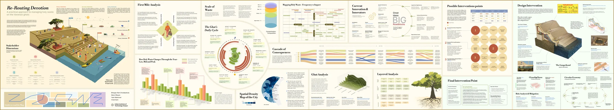
Fit
Synthesis map · Re-Routing Devotion
Drag to pan · Scroll or use + / − to zoom
Open the full synthesis map
%
PUBLISHED · RSD15, SHADES OF SYSTEMIC DESIGN · TURIN 2026
rsd15.org/focuson2/re-routing-devotion
01
OVERVIEW
The belief held. The material didn’t.
Imagine you’re on Dashashwamedh Ghat at dawn.
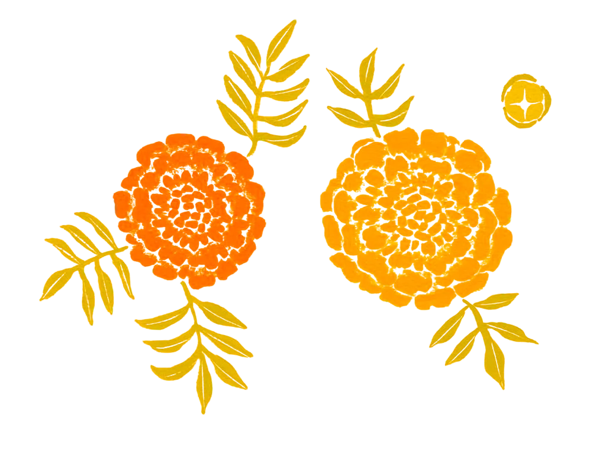
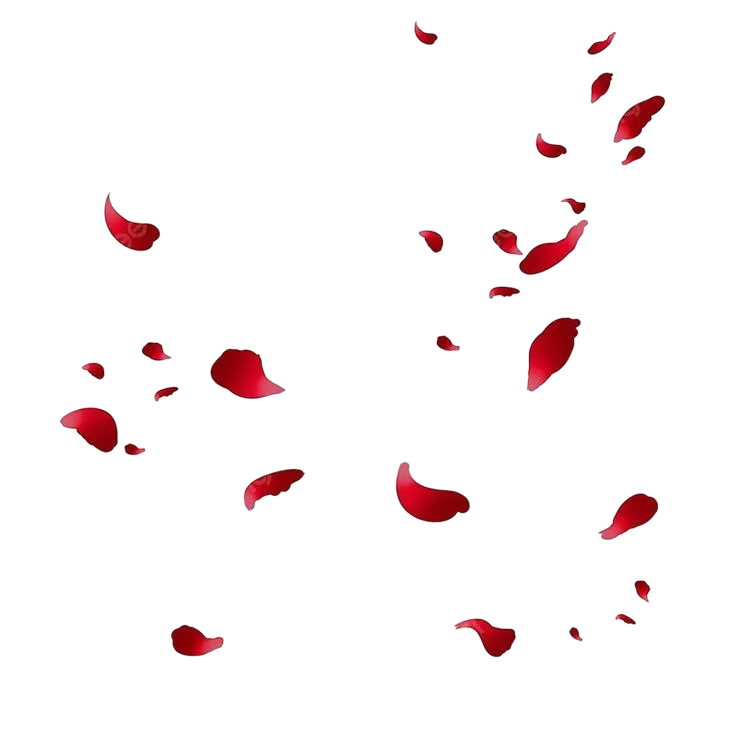
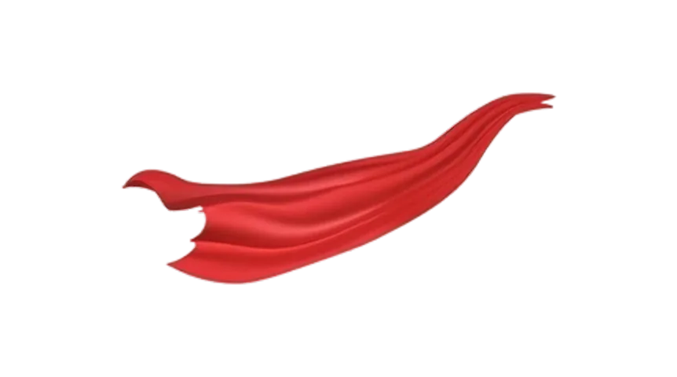
Workers clean it, but every day the pile comes back which leads to 10 tonnes of holy offering a day
Before
After
With folded hands and pure faith, you offer Maa Ganga a flower and a diya, and let her take it.
offering drifts to the edge of the steps and stops there, beside thousands of others.